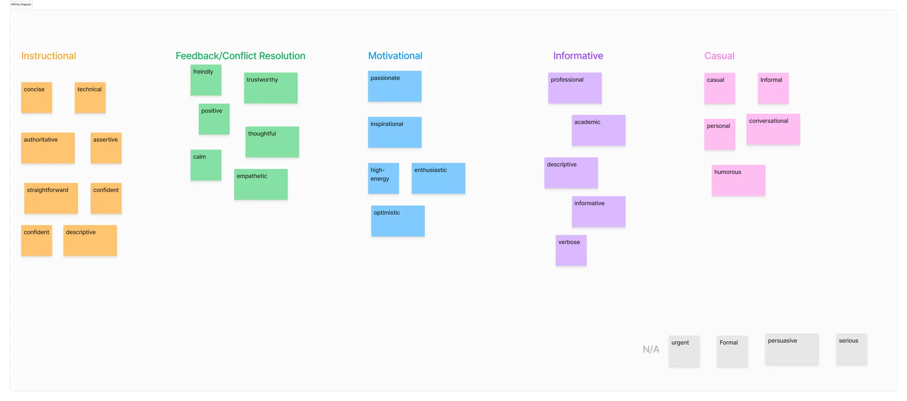
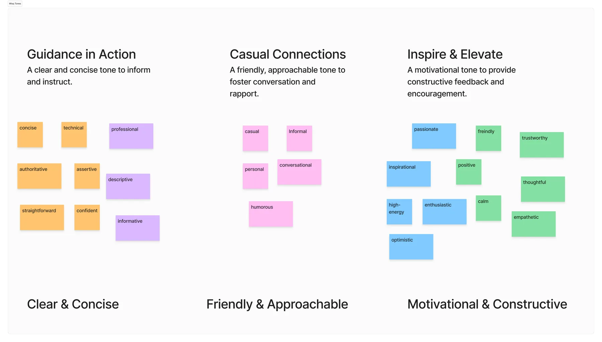
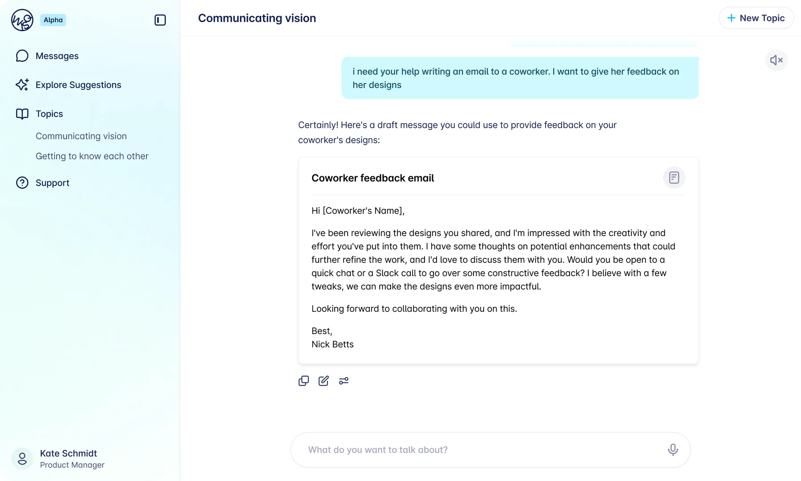
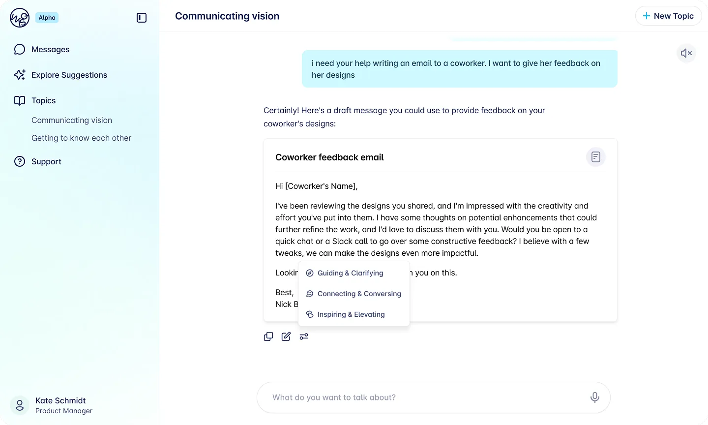
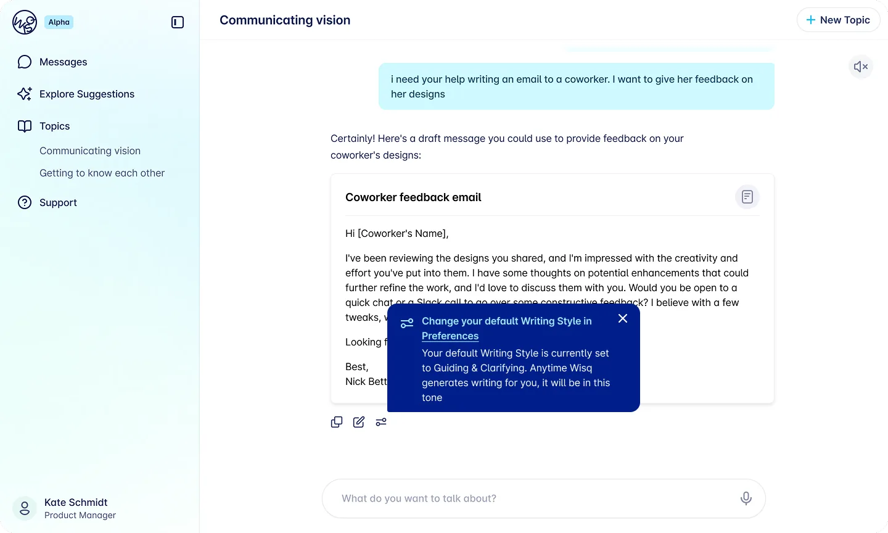
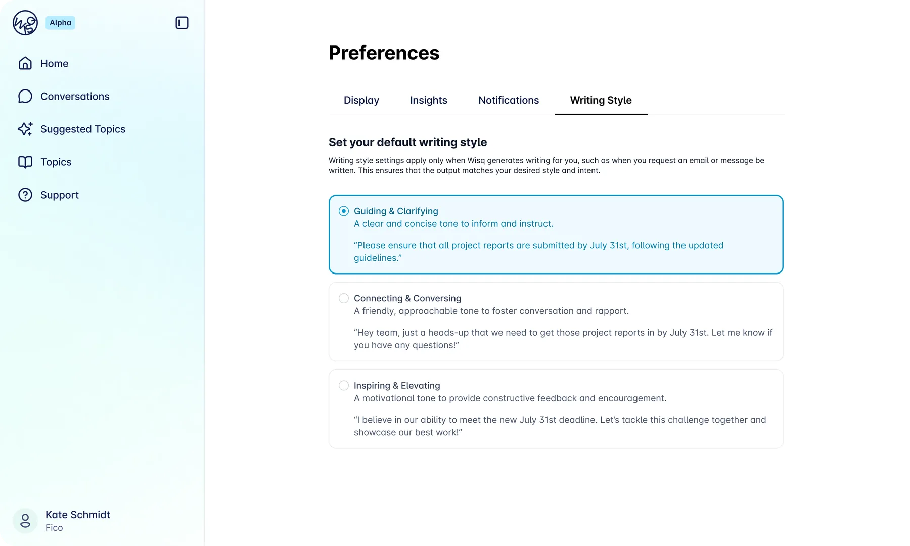

Giving AI-generated text the right tone for the situation.
When Wisq generated text for users, it typically needed editing before it felt usable. The output worked technically, but it defaulted to a single neutral voice, which did not fit every situation.
A message from a manager to a direct report should read differently than one from a consultant to a client or a colleague to a coworker. The problem was not broken output. It was a missing layer of context.
Without a way to tell Wisq what kind of communication was happening, every piece of generated copy started from the same place. This project was about closing that gap by improving the default output and giving users a way to define the tone that fit their situation.
Role
UX Designer
Scope
Research → Design → Shipped to Production
Goal
Reduce friction in the text generation experience by improving default output tone and giving users a way to customize it for different professional scenarios.
Research
Before designing anything, I needed to understand what "tone" actually meant in practice, both for users and for the AI generating the output.
I pulled from existing user notes and external research, then mapped everything in Miro, grouping similar tone descriptors together through affinity diagramming to find patterns in what users were actually asking for.

Miro board showing tone research and affinity groupings.
The key tension that kept coming up was that the words humans use to describe tone do not translate cleanly into LLM prompts. "Friendly" or "professional" means something different to every person, and a vague prompt produces inconsistent outputs from the model.
That meant users should not have to write their own prompts. That work needed to happen behind the scenes.
I worked closely with our AI prompt engineer throughout to make sure each tone we defined actually came out the way it was intended when generated.
Research Takeaways
Three tones emerged from the research as the most useful, most requested, and most distinct from each other.
Each was pressure-tested with the prompt engineer and reviewed with stakeholders to confirm the label and the underlying prompt produced consistent, predictable results.
Guidance in Action
A clear, concise tone for informing and instructing. Built for scenarios like a manager communicating with a direct report.
Casual Connections
A friendly, approachable tone for fostering conversation and rapport. Built for peer-to-peer communication between coworkers.
Inspire & Elevate
A motivational tone for constructive feedback and encouragement. Built for consultant-to-client or coaching-style communication.

Synthesized tone definitions and prompt testing.
Design
Wisq had an established design system and component library, so the work was not about building from scratch. It was about finding the right way to fit tone selection and text controls into existing patterns.
The main question in chat was how to present generated text alongside the options to copy, edit, or adjust tone without overwhelming the interface. Several directions were explored, including an overlay approach for tone selection, but that was set aside in favor of something more inline and less disruptive to the flow.
The settings tab was more straightforward: a new section within the existing preferences structure where users could view and update their tone at any time.
For existing users encountering the feature for the first time, a tooltip on first use pointed them to the new setting without interrupting their workflow.
Design iterations across chat.
Final Designs
The final experience covers two surfaces. In settings, users can view and change their tone preference at any time. In chat, tone selection is present without being intrusive, accessible when users need it, out of the way when they do not.
The designs were handed off to engineering and shipped to production for real customers before my internship concluded.




Final chat and settings designs.
Closing Insight
The most important thing this project reinforced was that giving users control does not mean giving them a blank canvas.
The real design work happened in the research: translating messy human language about tone into consistent, reliable AI outputs. Once that foundation was solid, the interface just needed to make the choice feel simple.